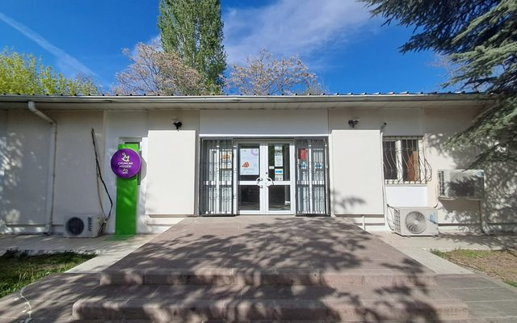
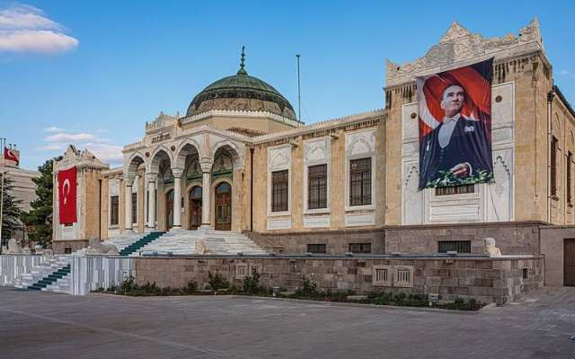

Ana sayfa › İl il gezilecek yerler › Ankara
Ankara'da Kültür Varlıkları rehberinde 36 yer var: 29 müze, 4 ören yeri, 2 kale & tarihi yapı, 1 dini yapı. Aşağıda öne çıkanları, haritayı ve tüm yerlerin listesini bulabilirsiniz.
⭐ Öne çıkanlar

1 · Ankara · MüzeAnadolu Medeniyetleri Müzesi
Anadolu Medeniyetleri Müzesi, Ankara Kalesi'nin eteğinde, 15.

2 · Ankara · MüzeGordion Müzesi
Gordion Müzesi, Polatlı'ya bağlı Yassıhöyük köyünde, Frig Krallığı'nın başkenti Gordion'un hemen yanında yer alır.

3 · Ankara · Müze15 Temmuz Demokrasi Müzesi
15 Temmuz Demokrasi Müzesi, 15 Temmuz 2016 gecesi yaşanan darbe girişimini ve o gece yaşanan olayları belgelemek amacıyla kurulmuş bir yakın tarih müzesidir.
🗺 Haritada
📍 Tüm yerler (36)
Müze (29)
Anadolu Medeniyetleri MüzesiMüzeGordion MüzesiMüze · UNESCO15 Temmuz Demokrasi MüzesiMüze Alagöz Karargâh MüzesiMüze
Alagöz Karargâh MüzesiMüze Altınköy Açık Hava MüzesiMüze
Altınköy Açık Hava MüzesiMüze Anadolu Yaşayan Köy Açık Hava MüzesiMüze
Anadolu Yaşayan Köy Açık Hava MüzesiMüze
Ankara Oyuncak MüzesiMüze AnıtkabirMüze
AnıtkabirMüze Atatürk Konutu ve Demiryolları MüzesiMüze
Atatürk Konutu ve Demiryolları MüzesiMüze Beypazarı Yaşayan MüzeMüze
Beypazarı Yaşayan MüzeMüze CerModernMüze
CerModernMüze Cumhuriyet MüzesiMüze
Cumhuriyet MüzesiMüze Erimtan Arkeoloji ve Sanat MüzesiMüze
Erimtan Arkeoloji ve Sanat MüzesiMüze
Etnografya MüzesiMüze Gökyay Vakfı Satranç MüzesiMüze
Gökyay Vakfı Satranç MüzesiMüze Hava Kuvvetleri MüzesiMüze
Hava Kuvvetleri MüzesiMüze Mke Sanayi ve Teknoloji MüzesiMüze
Mke Sanayi ve Teknoloji MüzesiMüze Odtü Bilim ve Teknoloji MüzesiMüze
Odtü Bilim ve Teknoloji MüzesiMüze Resim Heykel MüzesiMüze
Resim Heykel MüzesiMüze Tcdd Açık Hava Buharlı Lokomotif MüzesiMüze
Tcdd Açık Hava Buharlı Lokomotif MüzesiMüze Tcdd Malıköy Tren İstasyonu MüzesiMüze
Tcdd Malıköy Tren İstasyonu MüzesiMüze Türk Hava Kurumu MüzesiMüze
Türk Hava Kurumu MüzesiMüze Ulucanlar Cezaevi MüzesiMüze
Ulucanlar Cezaevi MüzesiMüze Çengelhan Rahmi M. Koç MüzesiMüzeJandarma MüzesiMüzeKahramankazan 15 Temmuz Şehitleri ve Demokrasi MüzesiMüzeKurtuluş Savaşı MüzesiMüzeMehmet Akif Ersoy Edebiyat Müze KütüphanesiMüzeMta Şehvar Doğa Tarihi MüzesiMüze
Çengelhan Rahmi M. Koç MüzesiMüzeJandarma MüzesiMüzeKahramankazan 15 Temmuz Şehitleri ve Demokrasi MüzesiMüzeKurtuluş Savaşı MüzesiMüzeMehmet Akif Ersoy Edebiyat Müze KütüphanesiMüzeMta Şehvar Doğa Tarihi MüzesiMüzeÖren Yeri (4)
 Ankara Roma TiyatrosuÖren Yeri
Ankara Roma TiyatrosuÖren Yeri Augustus TapınağıÖren Yeri
Augustus TapınağıÖren Yeri Juliopolis NekropolüÖren Yeri
Juliopolis NekropolüÖren Yeri Roma Hamamı ÖrenyeriÖren Yeri
Roma Hamamı ÖrenyeriÖren YeriKale & Tarihi Yapı (2)


Dini Yapı (1)

🧭 Bu ili içeren rotalar
🏺 İlgili uygarlık rehberleri
Anadolu'nun ilk köyleri: Aşıklı Höyük ve ÇatalhöyükMÖ 8300–5700 · NeolitikHititler ve Geç Hitit krallıklarıMÖ 1650–700 · Tunç Çağı ve Demir ÇağıFrigler ve LidyalılarMÖ 9.–6. yüzyıl · Demir ÇağıÇanakkale'den Cumhuriyet'e1915 – 1923Selçuklular ve Beylikler1071 – 15. yüzyılRoma döneminde AnadoluMÖ 133 – MS 4. yüzyıl
👩🏫 Öğretmenler için
📄 Anadolu Medeniyetleri Müzesi – Okul gezisi kâğıdı📄 Benim ilim: Ankara📄 Kurtuluş Savaşı Müzesi (Birinci Meclis) – Okul gezisi kâğıdı🚌 Bu ile okul gezisi planlaEtkinlik kâğıtları ▸